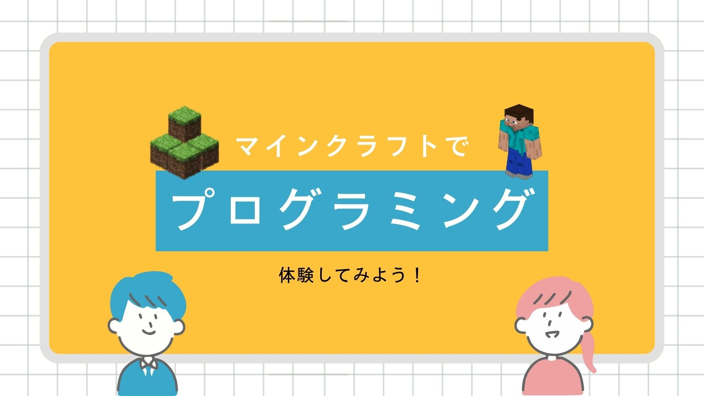
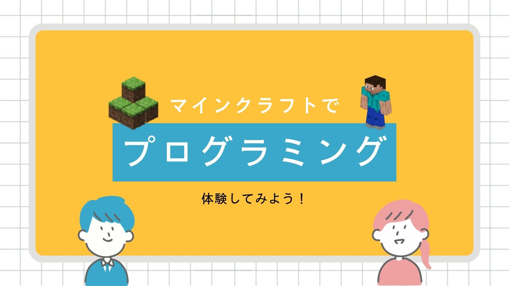
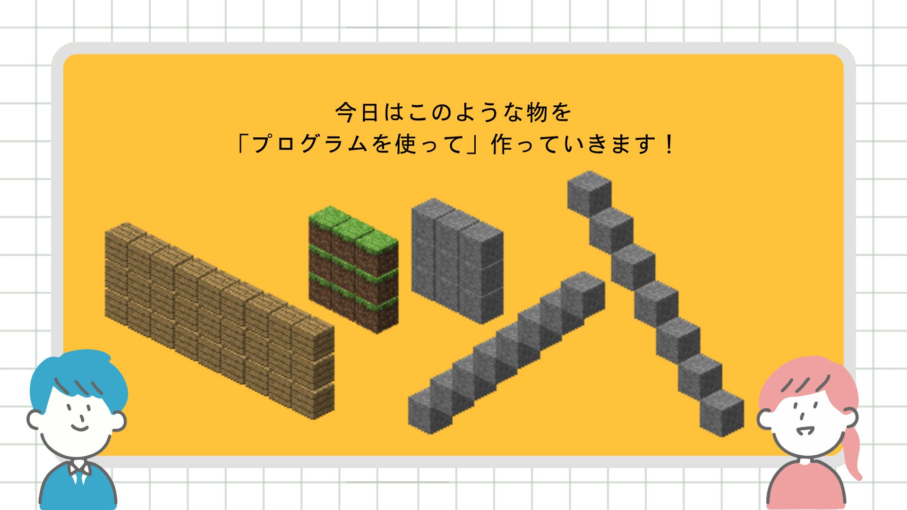
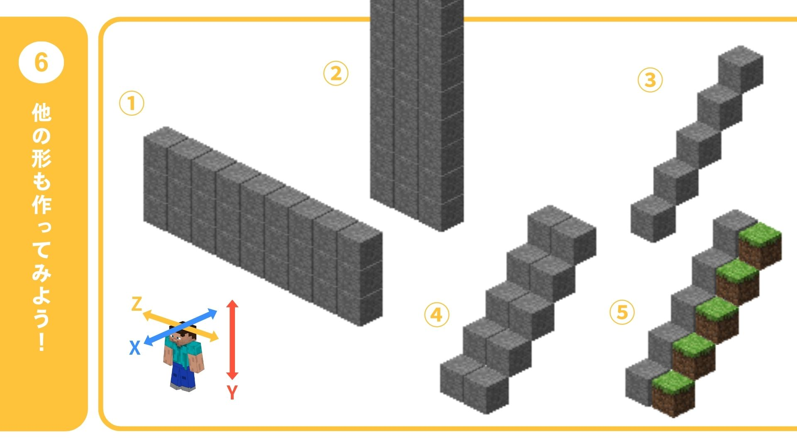

マインクラフトというゲームの裏側には、 すべてを可能にする「コード」という言語が存在します。
普段何気なく遊んでいるその世界を、 今日は自分自身の手でハックしてみましょう。 自分だけのルールを実装し、誰も見たことがない機能を 生み出す——それがプログラミングの本当の力です。
あなたの世界観をつくる、 はじめの一歩を今踏み出しましょう！
このページでは、Pythonを使ってマインクラフトをプログラミングするためのステップバイステップのガイドを提供します。 各ステップのコードをコピーして、ご自身の環境で試してみましょう。

・
⛏️
・
🌳
・
💎
・
{{ sample.emoji }}
{{ sample.title }}
{{ sample.description }}
{{ sample.code }}

これで基本的なマインクラフトのプログラミングが学べました。 色々なブロックを試したり、もっと複雑な構造を作ってみましょう！